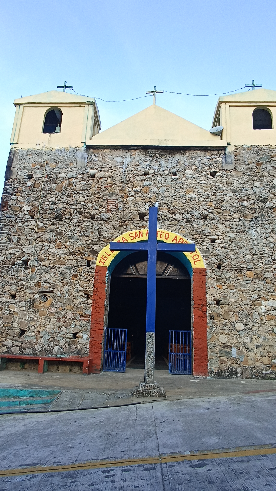

Cha'p'ejl k'in tyi Febrero — I-k'iñi Candelaria
Jiñi i-k'iñi Candelaria mi' k'iñäliñel tyi cha'p'ejl k'in tyi Febrero, jiñäch junp'ejl k'iñälij cha'añ i-yototy Dios mi' melob jiñi lak-lumal tyi ch'olob. Ili k'iñälij añ i-yik'oty che' tyi yäk'äyob tyi k'elol jiñi ch'ujul aläl Jesús tyi i-yototy Dios yik'oty che' mi' ch'ujutesañob jiñi cantilaj, tsa'bä mi' yäk' tyi k'elol jiñi k'ajk yik'oty jiñi i-ch'ujulñibel lak-pusik'al. Cha me’ba’ añob i-familiayob mi’ c'antyañ ili t'añ, jiñäch junp'ejl k'in cha'añ mi' tempäñob ibä tyi i-yototy Dios, mi' cha'leñob oración yik'oty mi' tyem-cha'leñob t'añ.
Jiñi ch'äjmbä tyi melol ili k'iñälij mi me'le' i-yelibal e'tyel cha'añ i-yototy Dios, i-uts'intyel ba' mi' cha'leñob oración yik'oty i-ch'ämbal i-t'añ jiñi aj-e me'ba mi' tyäk'ñañob e'tyel tyi i-yototy Dios. Tyi cabäl lumaltyak tyi México mi' tyem-wuch'ob tamal yik'oty atole, me’ba ma'añix cabäl t'añ cha'añ mi lak-su'beñ lak-ba che' jiñäch i-tyasol pejtyelel lak-lumal ch'olob tyi Tacotalpa. Jiñ cha'añ, jujunp'ejl lumal mi me'le' i-bajñel bajche' mi' k'iñäliñob ili k'in, che' bajche' añ i-tyasol tyi i-familia yik'oty tyi i-yototy Dios. Ili k me’ba mi' yäk' tyi k'elol che' kuxul-to jiñi ch'ujul-t'añ yik'oty i-ñuklel che' mi' tempäñob ibä jiñi lak-lumal.

2 de febrero — Día de la Candelaria
El Día de la Candelaria, celebrado el 2 de febrero, es una festividad religiosa que forma parte de las tradiciones católicas de distintas comunidades ch’oles. Esta celebración está relacionada con la presentación del Niño Jesús en el templo y con la bendición de las velas, que representan la luz y la fe. Para las familias que conservan esta tradición, es una fecha de encuentro y participación religiosa, en la que se reúnen para acudir a la iglesia, realizar oraciones y compartir momentos de convivencia.
La preparación de esta celebración puede incluir la organización de las actividades religiosas, el arreglo de los espacios de oración y la participación de las personas encargadas de colaborar con la iglesia. En distintas regiones de México es común acompañar esta fecha con tamales y atole, aunque no existe suficiente información para asegurar que estas comidas sean una costumbre específica de todas las comunidades ch’oles de Tacotalpa. Por ello, cada localidad puede conservar formas particulares de celebrar esta fecha, de acuerdo con sus propias costumbres familiares y religiosas. Esta festividad refleja la permanencia de las creencias católicas y la importancia de las reuniones comunitarias en la vida de sus habitantes.
Cha'p'ejl k'in cha'añ Ch'ujul Cruz — Ux-p'ejl k'in tyi Mayo
Jiñi k'iñälij cha'añ Ch'ujul Cruz junp'ejl k'iñälij añ i-ñuklel tyi jujunp'ejl i-lumal xCh'olob tyi wits-lum tyi Tabasku, ba' mi isäkliñtyel i-ch'ujul-t'añob yik'oty i-c'antyañbal i-lumal yik'oty woli i-yäk'ob woccolix i-yälätyak cha'añ pejtyelel chäbä mi' yäk' kuxtyelel. Junp'ejl yejtalil ts'ijbubil mi' tyajyel tyi lumal tyi Cuviac, tyi municipio tyi Tacotalpa, ba' tyi ux-p'ejl k'in tyi Mayo mi' melob junp'ejl ch'ujul-e'tyel i-kaba' K'ajtynibal i-yälätyak i-si'jejlel ja'. Ili ch'ujul-e'tyel mi' yäk' woccolix i-yälätyak tyi Lak-ña' Lum cha me’ba’ kuxul-to jiñi ja', ch'ujul-bä tyi k'elol cha'añ pejtyelel lak-lumal.
Jiñi ch'äjmbä tyi melol ili k'iñälij mi me'le' i-uts'intyel jiñi i-yototy Dios yik'oty jiñi Cruz yik'oty i-nichik tye' yik'oty i-bonolil. Che' woli jiñi ch'ujul-e'tyel, jiñi x-ñoxobob tyi lumal mi' cha'leñob oración tyi i-tyojlel altar, che' woli i-yotsañob pom yik'oty i-rezojob. Jiñi añbä tyi k'iñälij mi' ch'ämob tyäl i-majtyañ yik'oty chäbä mi' k'añob tyi ch'ujul-e'tyel, bajche' bandera, i-juyub ty'añ yik'oty junp'ejl cruz tyi tye'. Che' wi'il, mi' cha'leñob xämbal majlel tyi i-si'jejlel ja', ba' mi' melob junp'ejl ba' mi' kuxtyañob oración cha'añ mi' yäk'ob woccolix i-yälätyak cha'añ ili ja'. Tyi i-majtyañob tz'ijbubil mi' tyajyel i-wuch'bal melbilbä tyi ixim, calte', matz' yik'oty yambä wuch'bal, che' je'el mi' yotsañob cantilaj, pom yik'oty ch'ujul-ja'. Jiñi i-juyub jul-ak' yik'oty tambor mi' ch'ämbä tyi k'añol tyi ili ch'ujul-e'tyel. Ili e'tyel mi' yäk' tyi k'elol bajche' mi' tyem-melob i-ch'ujul-t'añ yik'oty i-c'antyañbal i-lumal.
C'ax iñukbä cha'añ mi lak-ts'ak-ñatyañ cha'añ ili k'iñälij mach lajalic yik'oty i-k'ak'el mayordomo. Anquese jiñi cha'p'ejl mi mejlel i-yojñel tyi i-yeslel jiñi lumal, mach lajalic ch'ujul-e'tyel mach jiñic tyi junp'ejl k'in mi' mele'.
Espacio reservado para fotografías de la celebración.
3 de mayo — Día de la Santa Cruz
El Día de la Santa Cruz es una celebración que tiene un significado particular en algunas comunidades ch’oles de la sierra de Tabasco, donde las prácticas religiosas se relacionan con el respeto a la naturaleza y el agradecimiento por los recursos que permiten la vida. Por ejemplo el 3 de mayo se realiza un ritual conocido como la Petición de Promesa del Ojo de Agua. Esta ceremonia expresa el agradecimiento a la Madre Tierra por la permanencia del agua, considerada indispensable para las personas y para las actividades de la comunidad.
La preparación de esta celebración incluye la decoración de la capilla y de la cruz con flores tropicales y adornos de colores. Durante la ceremonia, los ancianos de la comunidad dirigen oraciones frente al altar, mientras el incienso acompaña los rezos. Los participantes llevan ofrendas y algunos elementos ceremoniales, como banderas, instrumentos musicales y una cruz de madera. Posteriormente, se realiza una procesión hacia el ojo de agua, donde se prepara un espacio para continuar con las oraciones y agradecer por este recurso natural. Entre las ofrendas documentadas se encuentran alimentos elaborados a base de maíz, caldo, pozol y otros productos, acompañados de velas, incienso y agua bendita. La música de flauta de carrizo y tambores también forma parte de este ritual. Estas prácticas muestran la relación entre la espiritualidad, la vida comunitaria y el cuidado de los recursos naturales.
Es importante distinguir esta celebración del cambio de mayordomía. Aunque ambos pueden formar parte de las tradiciones religiosas de la región, no son necesariamente la misma ceremonia ni ocurren en la misma fecha.
Espacio reservado para fotografías de la celebración.
I-k'ak'el Mayordomo
Jiñi i-k'ak'el mayordomo jiñäch junp'ejl ch'ujul-e'tyel yik'oty i-tempñel lak-lumal c'antyabilbä tyi jujunp'ejl i-lumal xCh'olob tyi municipio tyi Tacotalpa, Tabasku. Ili e'tyel mi' yäk' tyi k'elol i-c'ajñibal i-yäke' i-t'añ jiñi winikob muk'bä i-coltañ tyi i-melol i-k'iñälij yik'oty i-c'antyañ i-yototy Dios yik'oty lak-lumal. Pejtyelel, jiñi mayordomob mi' cha'leñ e'tyel junp'ejl ja'bil, yik'oty che' woli i-ts'äktysan, mi' yäke' i-e'tyel tyi yambä winikob muk'bä i-ch'ämbeñ i-c'ajñibal.
Tyi i-lumal Puxcatán, jiñi i-k'ak'el mayordomo mi mele' che' woli i-k'inlel i-k'iñälij María Auxiliadora, cha me’ba’ tyi chanlaju'p'ejl winik yik'oty ox-p'ejl k'in tyi Mayo. Cha'añ ili k'in, jiñi mayordomob tsa'bä ch'ämbiyob yik'oty muk'bä i-ch'ämbeñ mi' tempäñob ibä cha'añ mi' melob junp'ejl ch'ujul-e'tyel mi' majlel tyi i-yototy Dios. Che' wi'il, mi' cha'leñob xämbal tyi i-yototy winikob muk'bä i-coltañ tyi mayordomo, yik'oty bandera yik'oty pom, yik'oty i-juyub jul-ak' yik'oty tambor. Tyi jujunp'ejl i-yototy mi' cha'leñob oración yik'oty ch'ujul-e'tyel cha'añ mi' yäke' yik'oty mi' ch'ämbeñ i-e'tyel.
Che' bajche' i-yeslel ili k'iñälij, jiñi i-familiayob aj-chumlibal mi' yäk' wuch'bal yik'oty wuch'bal majtyañ tyi winikob, bajche' matz' yik'oty wuch'bal melbilbä cha'añ ili k'iñälij. Jiñi xämbal mi' ts'äktyel tyi i-yototy Dios, ba' mi me'le' ch'ujul-e'tyel yik'oty mi' yäke' i-c'ajñibal i-t'añ winikob muk'bä i-ch'ämbeñ i-e'tyel. Che' jiñi, jiñi mayordomo mach junp'ejl e'tyel cha'añ i-yototy Diosic, pero jiñäch junp'ejl bajche' mi' coltañ yik'oty mi' c'antyañ lak-lumal.
Ili k'iñälij añ i-c'ajñibal cha'añ mi c'antyañ i-yeslel lak-ch'olob, cha me’ba’ mi' yäk' i-t'añ, i-c'ajñibal yik'oty ch'ujul-e'tyel tyi jujunp'ejl x-ñoxobob cha'añ i-yol alobob. Jiñi i-tempñel aj-chumlibal, juyub, oración yik'oty i-tempñel tyi wuch'bal mi' coltañ i-c'antyañbal lak-ch'olob yik'oty i-yeslel tyi Puxcatán yik'oty yambä i-lumal ba' mi' c'antyañ ili e'tyel.
Espacio reservado para fotografías de la celebración.
Cambio de mayordomía — 23 de mayo
El cambio de mayordomía es una tradición religiosa y comunitaria que se conserva en distintas localidades ch’oles del municipio de Tacotalpa, Tabasco. Esta práctica representa la renovación del compromiso de las personas encargadas de colaborar en la organización de las celebraciones religiosas y de atender las responsabilidades relacionadas con la iglesia y la comunidad. Generalmente, los mayordomos desempeñan su cargo durante un año y, al concluir este periodo, entregan sus responsabilidades a quienes continuarán con esta labor.
En la comunidad de Puxcatán, el cambio de mayordomía se realiza durante la víspera de la festividad de María Auxiliadora, es decir, el 23 de mayo. Para esta ocasión, los mayordomos salientes y entrantes se reúnen para llevar a cabo una ceremonia que comienza con actividades en la iglesia. Posteriormente, realizan un recorrido por las viviendas de las personas que participan en la mayordomía, llevando banderas e incienso y acompañados por el sonido de las flautas y los tambores. Durante las visitas se realizan oraciones y actos ceremoniales que simbolizan la entrega y recepción de las responsabilidades.
Como parte de esta tradición, las familias anfitrionas ofrecen alimentos y bebidas a los participantes, entre ellos pozol y comidas preparadas especialmente para la ocasión. El recorrido concluye en la iglesia, donde se realiza una celebración religiosa y se formaliza el compromiso de quienes reciben el cargo. De esta manera, la mayordomía no representa solamente una responsabilidad religiosa, sino también una forma de servicio y colaboración en beneficio de la comunidad.
Esta tradición tiene un valor importante para la conservación de la cultura ch’ol, ya que permite transmitir conocimientos, responsabilidades y prácticas religiosas entre generaciones. La participación de los habitantes, la música tradicional, las oraciones y la convivencia alrededor de los alimentos fortalecen los lazos comunitarios y contribuyen a mantener vivas las costumbres de Puxcatán y de otras localidades donde se practica esta forma de organización.
Espacio reservado para fotografías de la celebración.
Chanlaju'p'ejl winik k'in tyi Mayo — I-k'iñi María Auxiliadora
Tyi i-lumal xCh'olob tyi Puxcatán, municipio tyi Tacotalpa, jiñi k'iñälij cha'añ María Auxiliadora jiñäch junp'ejl k'iñälij c'ax iñukbä i-ñuklel yik'oty i-ch'ujul-t'añob jiñi lak-lumal. Jujunp'ejl chanlaju'p'ejl winik k'in tyi Mayo, jiñi aj-chumlibal mi' tempäñob ibä cha'añ mi' k'iñäliñob ili María Auxiliadora, ch'ujul-bä i-na' i-yototy Dios tyi lumal. Ili k'iñälij c'ax iñukbä cha'añ pejtyelel lak-lumal, cha me’ba’ mi' tyem-p'isik'añ i-ch'ujul-t'añob, i-tempñel ibä yik'oty i-c'antyañbal i-yoke ty'añ yik'oty i-yeslel.
Junp'ejl tyi c'ax iñukbä i-c'ajñibal tyi ili k'iñälij jiñäch i-k'ak'el mayordomo, mi me'le' che' woli i-k'inlel i-k'iñälij. Jiñi mayordomob muk'bä i-ts'äk'sañ i-e'tyel mi' yäk'beñ i-pa'tye'l yambä winikob muk'bä i-ch'ämbeñ i-c'ajñibal cha'añ mi' c'antyañ yik'oty mi' coltañ tyi i-momel e'tyel tyi i-yototy Dios. Tyi ili e'tyel, jiñi aj-chumlibal mi' tempäñob ibä tyi i-yototy Dios yik'oty mi' cha'leñob xämbal tyi i-yototy mayordomob, yik'oty bandera, pom, i-juyub jul-ak' yik'oty tambor. Tyi jujunp'ejl i-yototy mi' cha'leñob oración, mi' yäk' woccolix i-yälätyak, yik'oty mi' wuch'ob yik'oty mi' tyem-lo'lañ tyi wuch'bal bajche' matz'.
Jiñi k'iñälij woli mi' majlel yik'oty e'tyel tyi i-yototy Dios, ba' mi me'le' misa yik'oty mi' yäk' tyi k'elol i-c'ajñibal jiñi winikob muk'bä i-ch'ämbeñ i-mayordomo. Ili e'tyel mi' yäk' tyi k'elol i-c'ajñibal i-coltanel lak-lumal, cha me’ba’ jiñi muk'bä i-ch'ämbä mi' coltañ tyi i-melol i-k'iñälij yik'oty i-c'antyañbal i-ch'ujul-t'añob.
Jiñi i-k'iñälij María Auxiliadora mi' yäk' tyi k'elol bajche' i-ch'ujul-t'añ yik'oty i-tempñel lak-lumal mi' c'antyañ ibä tyi Puxcatán. Jiñi juyub, wuch'bal, oración yik'oty i-tempñel i-familiayob mi' coltañ cha'añ mach mi' säjt'el i-yeslel yik'oty i-c'ajñibal lak-chumlibal.
Espacio reservado para fotografías de la celebración.
24 de mayo — Día de María Auxiliadora
En la comunidad ch’ol de Puxcatán, municipio de Tacotalpa, la festividad de María Auxiliadora es una de las celebraciones religiosas más representativas. Cada 24 de mayo, los habitantes se reúnen para conmemorar a esta advocación de la Virgen María, considerada patrona de la iglesia católica de la localidad. Esta celebración tiene una gran importancia para la comunidad, pues reúne la devoción religiosa, la organización colectiva y la continuidad de las costumbres tradicionales.
Uno de los momentos más importantes de esta festividad es el cambio de mayordomía, que se realiza durante la víspera de la celebración. Los mayordomos que concluyen su servicio entregan sus responsabilidades a quienes asumirán el compromiso de organizar y colaborar en las próximas actividades religiosas. Durante este acto, los participantes se reúnen en la iglesia y realizan recorridos por las casas de los mayordomos, acompañados de banderas, incienso, flautas y tambores. En cada visita se llevan a cabo oraciones y ceremonias, además de compartir alimentos y bebidas tradicionales, como el pozol.
La celebración continúa con actividades religiosas en la iglesia, donde se realiza una misa y se reconoce el compromiso de las personas que reciben la mayordomía. Esta responsabilidad representa una forma de servicio a la comunidad, ya que quienes la asumen colaboran en la preparación de las festividades y en el mantenimiento de las tradiciones religiosas.
La festividad de María Auxiliadora permite observar cómo la fe y la organización comunitaria se mantienen relacionadas en Puxcatán. La música, los alimentos compartidos, las oraciones y la participación de las familias contribuyen a conservar una tradición que forma parte de la identidad cultural de sus habitantes.
Espacio reservado para fotografías de la celebración.
Junp'ejl yik'oty cha'p'ejl k'in tyi Noviembre — I-k'iñi Ch'ämbal Ajchämelel
Jiñi I-k'iñi Ajchämelel jiñäch junp'ejl k'iñälij cha'añ mi lak-k'el yik'oty mi lak-c'antyañ i-c'ajñibal jiñi winikob tsa'bä chämix. Tyi Tabasku, ili tyasol mi kuxlel tyi jujunp'ejl bajche', che' bajche' mi' c'antyañ jiñi i-familiayob tyi jujunp'ejl lumal. Tyi cha'p'ejl k'in tyi Noviembre, jiñi i-familiayob mi' yäk'ob junp'ejl ba' mi' k'elob jiñi yik'otyob tsa'bä chämix, yik'oty oración, majtyañ yik'oty i-tempñel cha'añ mach mi' säjt'el i-c'ajñibal.
Tyi yoltak chäbä mi' yotsel tyi ili k'iñälij mi tyajyel cantilaj, nichim, i-yejtalil i-yototy Dios, frutal yik'oty wuch'bal melbilbä yu'un i-familiayob. Jiñi yotsel ili chäbä mi' tyajyel mi' yäk' tyi k'elol i-c'asñibel yik'oty i-woccolix i-yälätyak cha'añ jiñi machbi añixba. Jiñi melol i-majtyañ mi' coltañ cha'añ jiñi x-ñoxobob mi' tyak'beñ i-t'añ jiñi alobob tyi i-c'ajñibal yik'oty i-ch'ujul-t'añ i-familiayob, che' mi' coltañ i-c'antyañbal i-yoke ty'añ.
Tyi i-lumal Tabasku añ i-yik'oty yambä bajche' mi' k'iñäliñob ili k'in, cha me’ba’ mi' jalel bajche' mi' k'inlel jujunp'ejl lumal. Tyi i-lumal xCh'olob tyi Tacotalpa, ma'añix cabäl t'añ tz'ijbubil cha'añ mi lak-su'beñ lak-ba che' pejtyelel mi' melob altar yik'oty majtyañ che' lajal. C'ax iñukbä cha'añ mi lak-ñatyañ bajche' junp'ejl ch'ujul-e'tyel cha'añ mi lak-c'antyañ i-c'ajñibal jiñi chämelel yik'oty i-tyasol i-familia.
Espacio reservado para fotografías de la conmemoración.
1 y 2 de noviembre — Día de Muertos
El Día de Muertos es una celebración dedicada a recordar y honrar la memoria de las personas que han fallecido. En Tabasco, esta tradición se vive de distintas maneras, dependiendo de las costumbres de cada comunidad y de las prácticas que las familias han conservado a través del tiempo. Durante los días 1 y 2 de noviembre, las familias suelen preparar espacios especiales para recordar a sus seres queridos, mediante oraciones, ofrendas y reuniones que permiten mantener presente su memoria.
Entre los elementos que pueden formar parte de estas celebraciones se encuentran las veladoras, las flores, las imágenes religiosas, las frutas y los alimentos preparados por las familias. La colocación de estos elementos representa una muestra de cariño y respeto hacia quienes ya no están. La preparación de las ofrendas también permite que las personas mayores compartan con los más jóvenes las historias y recuerdos familiares, fortaleciendo los vínculos entre generaciones.
En las comunidades de Tabasco existen diferentes formas de conmemorar estas fechas, por lo que las prácticas pueden variar de una localidad a otra. En el caso de las comunidades ch’oles de Tacotalpa, no se cuenta con suficiente documentación para afirmar que todas realizan los altares y las ofrendas de una misma manera. Sin embargo, esta celebración puede abordarse como parte de las expresiones religiosas y culturales de la región, reconociendo la importancia del recuerdo de los familiares fallecidos y de las tradiciones que cada familia conserva.
Espacio reservado para fotografías de la conmemoración.
Lajchub p'ejl k'in tyi Diciembre — I-k'iñi Virgen de Guadalupe
Jiñi I-k'iñi Virgen de Guadalupe, mi' k'iñäliñel tyi lajchub p'ejl k'in tyi Diciembre, jiñäch junp'ejl k'iñälij c'ax iñukbä cha'añ cabäl lumaltyak tyi México. Ili k'iñälij cha'añchä Virgen de Guadalupe yik'oty mi' yäk' tyi k'elol i-ch'ujul-t'añ yik'oty i-c'asñibel winikob muk'bä i-tempäñ ibä tyi i-yototy Dios. Tyi i-lumal xCh'olob, ili k'iñälij tz'ijbubil tyi lumaltyak tyi Chiapas, bajche' Palenque yik'oty Salto de Agua, che' je'el tyi Tabasku añ yik'oty i-ch'ujul-t'añ i-Virgen tyi jujunp'ejl e'tyel tyi ch'ujul-t'añ.
Jiñi melol i-k'iñälij Virgen mi' yäk' i-ch'ajñibel yik'oty i-uts'intyel i-yototy Dios, yotsel nichim, melol oración yik'oty i-coltañ i-lumal tyi ch'ujul-e'tyel. Tyi jujunp'ejl lumal mi' melob xämbal yik'oty i-tempñel i-lumal cha'añ mi' coltañ k'iñälij. Ili e'tyel mi' yäk' i-c'ajñibal i-coltanel i-familiayob yik'oty jiñi winikob muk'bä i-c'antyañ i-yototy Dios yik'oty mi' melob ch'ujul-e'tyel.
Tyi Cuviac, Tacotalpa, tz'ijbubil i-yik'oty i-yejtalil Virgen de Guadalupe tyi ch'ujul-e'tyel Ch'ujul Cruz tyi ux-p'ejl k'in tyi Mayo. Ili t'añ mi' yäk' tyi k'elol i-yik'oty tyi jujunp'ejl ch'ujul-e'tyel; pero mach i-ch'ämbäic tyi k'elol che' pejtyelel e'tyel tyi lajchub p'ejl k'in tyi Diciembre mi' mele' che' lajal tyi pejtyelel i-lumal xCh'olob tyi Tabasku.
Jiñi i-c'asñibel Virgen de Guadalupe jiñäch junp'ejl ch'ujul-t'añ yik'oty i-yeslel lak-chumlibal. I-k'iñälij mi' yäk' i-tempñel lak-lumal, yik'oty mi' coltañ i-c'antyañbal i-ch'ujul-t'añ mi' majlel tyi jujunp'ejl x-ñoxobob cha'añ i-yol alobob.
Espacio reservado para fotografías de la celebración.
12 de diciembre — Día de la Virgen de Guadalupe
El Día de la Virgen de Guadalupe, celebrado el 12 de diciembre, es una de las fechas religiosas más importantes para numerosos pueblos y comunidades de México. Esta celebración está dedicada a la Virgen de Guadalupe y representa una expresión de fe y devoción que reúne a familias y habitantes en torno a las actividades de la iglesia. Entre las comunidades ch’oles, esta festividad se encuentra registrada en localidades de Chiapas, como Palenque y Salto de Agua, mientras que en Tabasco también existen expresiones de devoción a la Virgen en distintas prácticas religiosas.
La preparación de las celebraciones dedicadas a la Virgen puede incluir la limpieza y decoración de las capillas, la colocación de flores, la organización de rezos y la participación de los habitantes en las actividades religiosas. En algunas localidades también se realizan procesiones y reuniones comunitarias para acompañar la celebración. Estas actividades requieren la colaboración de las familias y de las personas encargadas de organizar los festejos, quienes contribuyen a mantener los espacios religiosos y preparar las ceremonias.
En Cuviac, Tacotalpa, se ha documentado la presencia de una imagen de la Virgen de Guadalupe durante el ritual de la Santa Cruz del 3 de mayo. Este dato muestra que su imagen forma parte de algunas expresiones religiosas de la región; sin embargo, no permite asegurar que las actividades del 12 de diciembre se realicen de la misma manera en todas las comunidades ch’oles de Tabasco.
La devoción a la Virgen de Guadalupe representa una expresión de las creencias religiosas que forman parte de la vida de algunos habitantes. Su celebración permite la convivencia y la participación comunitaria, al mismo tiempo que contribuye a conservar las prácticas religiosas que se transmiten de una generación a otra.
Espacio reservado para fotografías de la celebración.